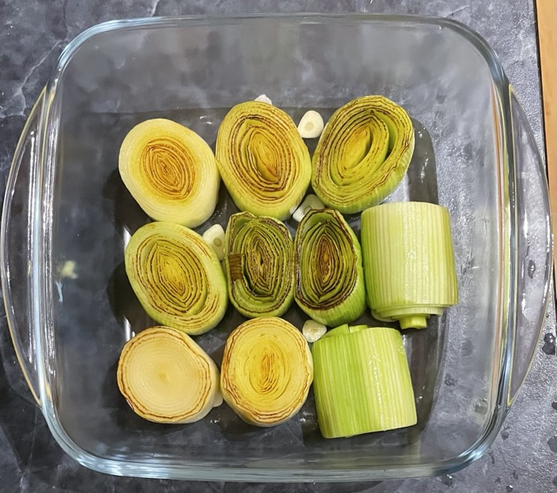

Leeks
Notes
- Don't slice lengthways or will come apart too easily
Prep
- Remove outer skin and top green section
- Rinse and pat dry
- Cut into 5cm sections
Braised
- Heat olive oil in pan on medium high heat until shimmering
- Add leeks cut side down and heat without moving for 5 mins until browned
- Place leeks in baking dish browned side up
- Dot top of leeks with butter
- Pour over leeks to cover halfway
- Cover with foil
- Cook in oven at 180°C for 30 mins
- Allow to cool for 5 mins
- Add to pan juices and pour over leeks
- Serve browned side up
Thyme & lemon
- Stock mixture
- Garnish & seasoning
- 2 tsp lemon zest
- 2 tsp lemon juice
- pepper
Miso & maple
- Stock mixture
- 150ml stock
- 2 garlic cloves sliced
- 2 tsp miso
- 1 tsp mirin
- ½ tsp sesame oil
- pinch chilli flakes
- knob of butter
- Garnish & seasoning
- 1 tsp maple syrup
- 1 tsp soy sauce
- lemon zest
Braised with peas
- Simmer in pan for 15 mins
- 1 leek outer skin removed & cut into 5cm sections
- 300ml stock
- clove garlic sliced
- ¼ tsp thyme
- pepper
- Add and cook for 5 more mins
- Drizzle with olive oil (optional) and season with pepper
Pics

